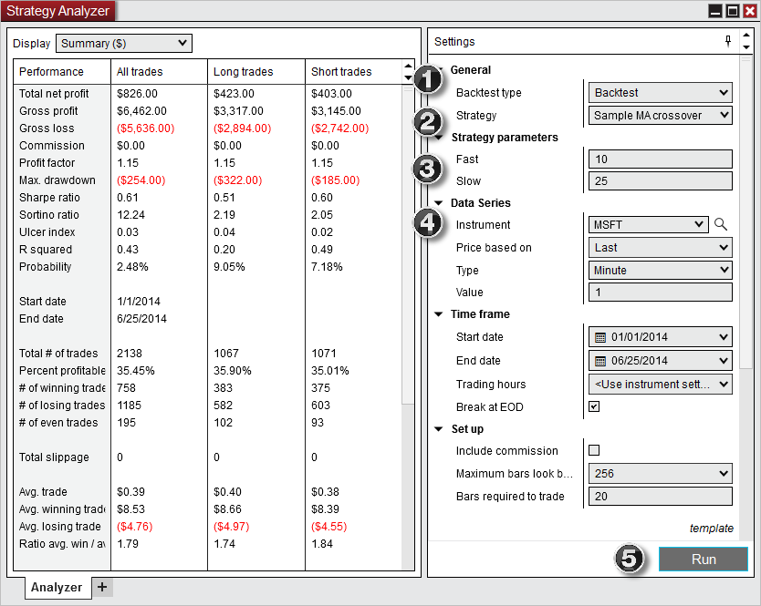
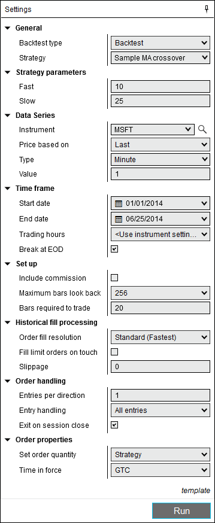

|
<< Click to Display Table of Contents >> Backtest a Strategy |


|
Backtest a Strategy
|
<< Click to Display Table of Contents >> Backtest a Strategy |
|
A backtest allows you to analyze the historical performance of a strategy. In order to run a backtest you will need:
•Access to historical data
•Custom NinjaScript *strategy
Tip: There are several pre-defined sample strategies that are installed with NinjaTrader that you can explore. |
 |
Notes: 1.By default, the Strategy Analyzer downloads data from your market data provider which can slow down backtest progress for larger tests. If you wish to disable this feature and operate using existing data in your database, right click on the Strategy Analyzer > select Properties > enable Use Local Data Only 2.The IncludeTradeHistoryInBacktest property is set to false by default when a strategy is applied in the Strategy Analyzer for backtesting. This provides for leaner memory usage, but at the expense of not being able to access Trade objects for historical trades. Thus, fields such as SystemPerformance.AllTrades.Count that rely on references to Trade objects will not have any such references to work with. If you would like to save these objects for reference in your code, you can set IncludeTradeHistoryInBacktest to true in the Configure state. For more information, see the Working with Historical Trade Data page. 3.A certain level of discrepancy between realtime and backtest results would be expected, especially on more exotic barstypes like Point & Figure and Renko, please also review this page for more details. |
Start a BacktestTo run a Backtest of a strategy:

1.Select the Backtest type of "Backtest" 2.Select the strategy you would like to backtest 3.Set the strategy and backtest parameters (See the "Understanding backtest properties" section below for property definitions) 4.Select the instrument and Data Series you would like to backtest 5.Select the "Run" button to start the backtest
|
 Understanding backtest properties
Understanding backtest properties
Backtest PropertiesThe following properties are available within the Backtest window:

|